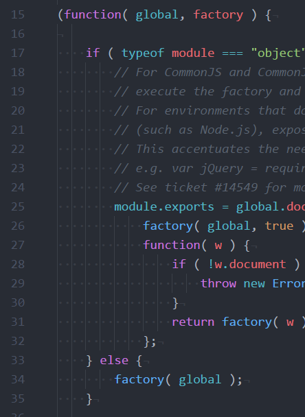
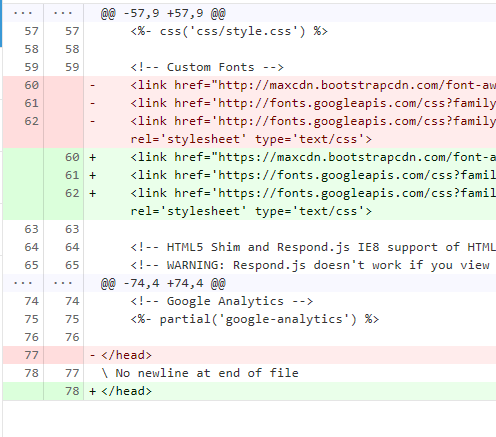

開發新產品的首要任務就是挑選一個舒適的開發環境，我個人用過Sublime Text 3與Atom兩款編輯器，較推薦使用Atom，原因就請見本文說明吧。
其餘還有各式各樣的現代編輯器：
但我也沒使用過，本文就不深入細講
有的人可能習慣使用
Visual Studio、Eclipse或Webstorm這類所謂IDE環境來開發，但我個人認為沒有必要，一來浪費效能，二來會夾帶很多IDE-only而與code無關的專案設定檔案，甚至還會自動在檔案開頭補上令人費解的註解汙染程式碼。再來談談中斷點功能，Javascript或是其他動態語言（如：Python）開發過程噴錯的時候通常會夾帶一串Error Stack，其實就已經足夠追蹤錯誤來源，IDE提供設置中斷點的功能是要方便靜態語言（如：C/C++、C#、…）的軟體開發，我們採用的MERN Stack使用的語言是Javascript，理論上中斷點功能對Debug幫助不大。
優缺點一覽
優點
- 免費無廣告
- 跨平台
- 內建GUI套件管理、主題管理
- 豐富的套件庫，且可使用GUI管理
- 與Git整合，highlight檔案及行號
缺點
- 不適合開大檔
- 沒有內建block comment快速鍵功能
常用快速鍵與訣竅
| 類別 | 效果 | 鍵盤組合 | 備註 |
|---|---|---|---|
| 通用 | 存檔 | Ctrl + s | |
| 選取文字 | Shift + [Ctrl] + Up / Down / Left / Right / Home / EdPgUp / PgDown | ||
| 分頁 | 新分頁 | Ctrl + n | |
| 關閉目前分頁 | Ctrl + w | ||
| 恢復上一個關閉的分頁 | Ctrl + Shift + t | ||
| 切換分頁 | Ctrl + [Shift] + Tab | ||
| 編輯 | 選取單字 | Ctrl + d | 連按可以連續選取 |
| 選取整行 | Ctrl + l | 連按可以連續選取 | |
| 複製/剪下/貼上整行 | Ctrl + c/x/v | ||
| 縮排/凸排選取部分文字 | [Shift] + Tab | ||
| 上移/下移選取部分文字 | Ctrl + Windows Key + Up/Down | ||
| 產生多重游標 | Ctrl + Alt + Up/Down 或 Ctrl + 滑鼠左鍵 | ||
| 離開多行編輯模式 | Esc | ||
| 搜尋 | 搜尋檔名 | Ctrl + p |
除了上述快速鍵之外，Atom還有一些訣竅
- 在已選取文字的情況下輸入左括號（
(、[、{、`）可以自動補齊右括號
建議設定
Settings > Editor Settings
啟用以下2個選項：
Show Indent Guide
有時候一個block跨了數十行，螢幕高度不夠容納整個block，就可以藉由此輔助線確保縮排正確Show Invisibles
身為開發者一定很常複製code，如果複製到了tab和space混用的code，可以透過啟用此選項輕鬆避開
效果如下：

Packages > 搜尋whitespace
啟用以下2個選項：
Ensure Single Trailing Newline
此選項乍看下很多餘，其實是為了提高Code Review的可讀性。
當未使用此選項時，檔案結尾不會有空白行，如果某一次commit必須在檔案結尾補上程式碼，Code Review時就會呈現如下圖77~78行的問題：

如果啟用此選項便可避開此問題Remove Trailing Whitespace
撰寫程式的過程中時常產生多餘的空白，啟用此選項便可在存檔時自動移除冗餘空白字元
建議套件
minimap
可以當作卷軸的輔助工具autocomplete-modules
對於目錄結構較深的專案十分有幫助highlight-selected
Atom並沒有內建此功能，但是連續選取單字時通常需要知道選取順序，因此透過此套件補足
總結
Atom是一個無論新手與老手都適用的編輯器，也是個適合處理網頁產品開發的好工具。多行編輯很適合用於網頁經常大量修改相似程式碼的情況，與Git的GUI整合可以讓開發時思緒更清楚，免費且跨平台表示團隊可以降低開發環境的成本。縱使Atom有天生上的缺陷，沒有辦法開啟大型檔案，但以我使用Atom一年來，開啟大檔的次數是0次，表示此瑕疵只會在極端情況下發生，至於其他功能不足的部分都可以透過安裝套件來補足。總的來說，寫Web選Atom就對啦！